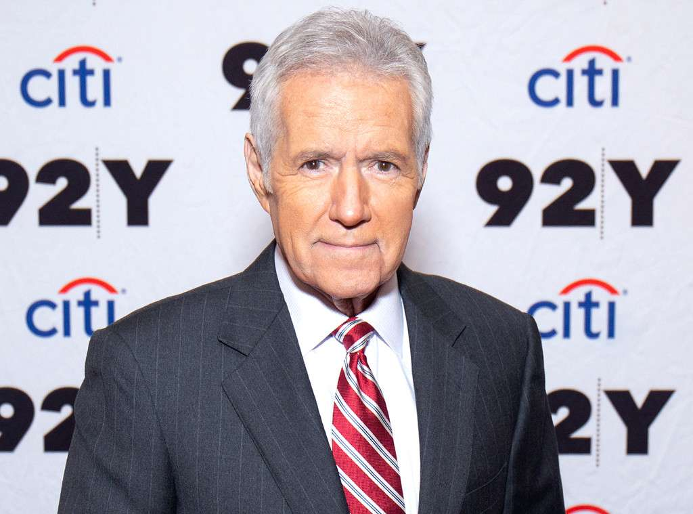

For 35 years, Alex Trebek has been the purveyor of obscure facts from the archeologist who opened King Tut's tomb in 1922 (Who is Howard Carter?) to the device Alexander Graham Bell tested out on Civil War vets still riddled with bullets (What is a metal detector?).
But yesterday the longtime Jeopardy! host educated his followers on something infinitely more important and far more personal.
"Just like 50,000 other people in the United States each year, this week I was diagnosed with stage 4 pancreatic cancer," he shared in a video message that has been viewed by upwards of three million people since it was posted to YouTube Wednesday afternoon. "Now normally the prognosis for this is not very encouraging, but I'm going to fight this, and I'm going to keep working."
His admission, that he made "in keeping with my longtime policy of being open and transparent with our Jeopardy! fan base," was crushing. And not just because it's hard to hear that anyone has been diagnosed with a disease as terrifying as cancer, particularly a form with discouraging odds that has already claimed such beloved Hollywood icons as Patrick Swayze, Alan Rickman and Aretha Franklin.
For the past three-plus decades, the 78-year-old native of Ontario, Canada has just been reliably there for us, turning up on our TV set each weeknight to teach us about literature, state capitals and world leaders in his soothing, authoritative voice. And while some stars might begrudge being pigeonholed so completely for the bulk of their career, the former Canadian Broadcasting Corporation newsreader seems to relish his roles as America's teacher.
"You have to set your ego aside," he reasoned to Vulture in November about the secret to his longevity. "The stars of the show are the contestants and the game itself. That's why I've always insisted that I be introduced as the host and not the star. And if you want to be a good host, you have to figure a way to get the contestants to—as in the old television commercial about the military—'be all you can be.' Because if they do well, the show does well. And if the show does well, by association I do well."
In many ways, he's succeeded far beyond any dream he may have harbored as a philosophy major at the University of Ottawa.
That's when the bilingual star (he speaks both French and English) got his start at the CBC, doing announcing work while still completing his studies. "I went to school in the mornings and worked at nights," he explained to the network in 1964. "I did everything, at one time replacing every announcer in every possible job."
By then, he'd earned a gig hosting a CBC-TV teen dance show called Music Hop, followed by Reach for the Top, a high school quiz show, and Strategy. In 1973, with a decade of hosting under his belt and considerable notoriety in his home country, he made the move to California.
Though he landed a role heading up The Wizard of of Odds, a game show with challenges revolving around statistical questions, he felt ill at ease in his new city. "I was a shy, small-town Canadian kid," he explained to Vulture. "A friend of mine, Alan Hamel, who is married to Suzanne Somers, had come to California before I did, and I always thought, He fits right into this society. I never felt like I belonged."